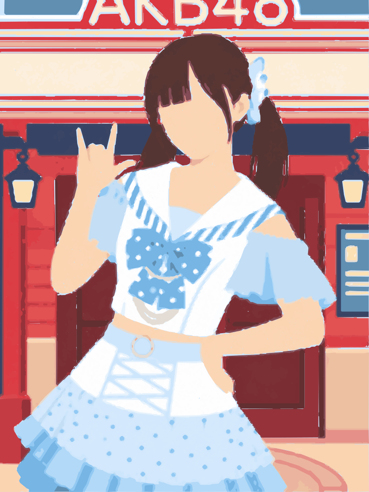

人物档案 · メンバープロフィール

正式成员 / 3期生 正規メンバー
王安妮 ワン・アニー
查看官方档案公式プロフィール ↗- 姓名名前
- 王安妮 · Wang Anni
- 团体グループ
- TSH48 原 AKB48 Team SH
- 期别期生
- 3期生 · 正式成员
- 昵称愛称
- 安妮 · Ann
- 生日誕生日
- 02.19 · 双鱼座
- 家乡出身
- 浙江
- MBTI
- ISFJ
- 粉丝名ファンネーム
- 红豆妮
- 常用话题ハッシュタグ
- #安妮的小日记本#
- 应援色応援カラー
- 红豆红 抹茶绿
人物档案 · メンバープロフィール

正式成员 / 3期生 正規メンバー